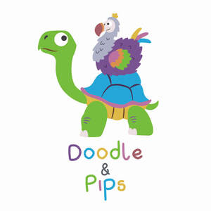

Trade Mark Journal No.2026/003 16 January 2026
UK00004318083 1 January 2026 (16,18,21,24,25,26,28,35)

- Class 16
- Greeting cards; Musical greeting cards; Cards; Pop-up greetings cards; Invitation cards; Paper boxes for storing greeting cards; Gift cards; Holiday cards; Christmas cards; Printed cards; Occasion cards; Correspondence cards; Note cards; Picture cards; Paper loyalty cards; Business cards; Name cards; Trading cards; Collectable cards; Motivational cards; File cards; Trivia cards; Social note cards; Record cards; Collectable trading cards; Place cards; Notebooks; Spiral-bound notebooks; Pocket notebooks; Notebook dividers; Notebook paper; Notepads; Reporters' notebooks; Notebook covers; Jotters; Sketchbooks; Wirebound books; Stationery folders; Illustrated notepads; Loose-leaf binders; Pen and pencil boxes; Paper stationery; Pens; Stationery boxes; Pencils; Pocket diaries; Writing stationery; Stationery; Pads [stationery]; Self-adhesive paper for notes; Pen and pencil cases; Notepaper; Loose-leaf pads; Printed stationery; Felt-tip pens; Pencil trays; Diaries; Document files [stationery]; Office stationery; Stencils [stationery]; Party stationery; Manifolds [stationery]; Cases for stationery; Stationery cases; Document holders [stationery]; Organizers for stationery use; Letterhead paper; Letterheads; File pockets for stationery use; Paper envelopes for packaging; Stickers; Car stickers; Sticker books; Decals; Sticker albums; Wall decals; Cardboard badges; Lettering stencils; Placards of cardboard; Self-adhesive plastic sheets for lining shelves; Printed luggage labels; Paper banners; Paper labels; Decorations for pencils; Paper gift tags; Paperweights; Wrapping paper; Gift wrapping paper; Decorative wrapping paper; Paper gift wrapping ribbons; Metallic gift wrapping paper; Sheets for wrapping made of paper; Paper gift wrap; Paper; Packing paper; Lining papers for wrapping; Paper and cardboard; Paper ribbon; Ribbons of paper; Gift paper; Newsprint paper; Kraft paper; Parchment paper; Paper impregnated with oil for wrapping purposes; Paper bags; Paper garlands; Cloth paper; Glassine paper; Napkin paper; Paper gift bags; Crepe paper; Paper boxes; Tissue paper; Paper napkins; Paper bags for packaging; Gift wrapping foil; Paper bows; Paper gift boxes; Recycled paper; Lining paper; Foils of plastic for wrapping; Paper bunting; Bunting [paper]; Handkerchiefs of paper; Tablemats of paper; Gift wrap; Gift bags; Gift boxes; Gift packaging; Christmas gift wrap; Gift tags; Gift cartons; Paper wine gift bags; Cardboard gift boxes; Birthday cards; Anniversary cards; Thank you cards; Blank cards; Announcement cards; Note paper; Note pads; Note books; Printed invitations; Printed calendars; Printed matter; Planners [printed matter]; Photographs; Picture postcards; Postcards and picture postcards; Art prints; Graphic art prints; Art pictures; Graphic art books; Materials for artists; Writing materials; Packaging materials; Printed packaging materials of paper; Printing blocks; Printed publications; Printed books; Printed newsletters; Printed patterns; Covers for books; Magazine covers; Covers for cheque books; Adhesive notepads; Adhesive lettering; Adhesive labels; Paper badges; Placards of paper; Adhesive packaging tapes; Self-adhesive tapes for stationery and household purposes; Stamps; Bags [envelopes, pouches] of paper or plastics, for packaging; Posters; Invitations; Notelets; Books; Story books; Colouring books; Picture books; Drawing books; Paint brushes; Writing instruments; Passport holders; Exercise books; Ring binders; Binders; Envelopes; Paper folders; Sticky tape; Gummed tape [stationery]; Paper tapes; Adhesive note paper; Adhesive stickers; Bags of paper; Paper pads; Paper tablecloths; Folders; Calendars; Advent calendars; Pencil sharpeners; Cardboard boxes; Shelf paper; Prints; Photographic prints; Fine art prints; Color prints; Metallic gift wrap; Adhesive wall decorations of paper; Table decorations of paper; Paper cake decorations; Paper party decorations; Metallic paper party decorations; Decorative paper centerpieces; Party ornaments of paper; Decorative paper garlands for parties; Tablecloths of paper; Placards of paper or cardboard; Letter paper; Paper tags; Blank paper notebooks; Party invitations; Washi; Blank journal books; Memo pads; Scribble pads; Adhesives for stationery or household purposes; Colouring pencils; Colouring crayons; Colouring pictures; Paper book markers; Book marks; Journals; Blank journals; Writing pads; Embroidery design patterns; Crayons; Paper party bags; Paper lunch bags; Book wrappings; Erasers; Typeface; Printing fonts; Typographic characters; Calligraphic works; Graphic prints; Printing characters; Graphic drawings.
- Class 18
- Luggage; Bags; Handbags, purses and wallets; Tote bags; Backpacks; Holdalls; Satchels; Luggage bags; Shoulder bags; Messenger bags; Bum bags; Grocery tote bags; Toiletry bags; Beach bags; Duffel bags; Gym bags; Crossbody bags; Makeup bags; Suitcases; Cosmetic bags; Luggage tags; Pouches; Umbrellas; Canvas bags; Changing bags; Drawstring pouches.
- Class 21
- Tea cups; Cups and mugs; Tea pots; Tea cosies; Plastic cups; Paper cups; Tea sets; Tableware; Oven-to-table tableware; Ceramic tableware; Tableware, cookware and containers; Coasters (tableware); Dinnerware; Glassware; Chinaware; Crockery; Cutlery trays; Crockery made of porcelain; Picnic crockery; China mugs; Drinkware; Jewelry dishes; Household or kitchen utensils; China ornaments; Cookware; Porcelain; Bakeware; Earthenware; Decorative plates; Ceramic ornaments; Household or kitchen containers; Trays [household]; Mixing bowls; Storage tins; Storage jars; Food storage containers; Jars; Plates; Bowls; Fruit bowls; Serving bowls; Cake stands; Jugs; Bento boxes; Bottles; Flasks; Sippy cups; Piggy banks; Ironing board covers; Oven gloves; Oven mitts; Napkin rings; Toiletry cases; Make-up brushes; Brushes; Combs; Soap dispensers; Cool bags; Thermal insulated tote bags for food or beverages; Insulated lunch bags; Lunch boxes; Picnic boxes; Paper plates.
- Class 24
- Textiles; Textiles for furnishings; Textiles for upholstery; Tapestries of textile; Household textiles; Patterned textiles for use in embroidery; Bedroom textile fabrics; Tablemats of textile; Textile fabric; Textile goods for use as bedding; Textile handkerchiefs; Textile napkins; Hand-towels made of textile fabrics; Apparel fabrics; Picnic blankets; Tea towels; Tea cloths; Towels; Bath towels; Bed linen; Quilts; Blanket throws; Cushion covers; Upholstery fabrics; Table linen; Curtains; Throws; Printed fabrics; Wall fabrics; Fabric.
- Class 25
- Aprons; Socks; Gloves; Headwear; Footwear; Clothing; Jackets [clothing]; Knitwear [clothing]; Coats; Cardigans; Sweaters; Jumpers; Dresses; Skirts; Tops; T-shirts; Clothing for children; Clothing for babies; Clothing for infants; Clothing for men, women and children; Nightwear; Dungarees; Jumpsuits; Playsuits [clothing]; Underwear; Pyjamas; Trousers; Shorts; Rain boots; Dressing gowns; Swimwear; Slippers; Headbands; Beanie hats; Hats; Bobble hats.
- Class 26
- Hair scrunchies; Scrunchies; Ribbons of textile for wrapping; Ribbons of textile materials; Silk ribbons; Haberdashery ribbons; Textile bows for gift wrapping; Velvet ribbons; Elastic ribbons; Hair ornaments; Hair bows; Hair decorations; Hair ribbons; Hair clips; Embroidered badges; Button badges.
- Class 28
- Tarot cards [playing cards]; Bingo cards; Playing cards and card games; Playing cards; Keno cards; Game cards; Kendo cards; Japanese playing cards; Card games; Trading card games; Playing card cases; Christmas stockings; Christmas tree decorations; Christmas crackers; Christmas tree ornaments; Christmas tree skirts.
- Class 35
- Retail services in relation to homeware; Retail services in relation to tableware; Wholesale services in relation to tableware; Retail services relating to home textiles; Retail services relating to jewelry; Wholesale services relating to jewelry; Retail services in relation to stationery supplies; Retail services connected with stationery; Wholesale services in relation to stationery supplies; Retail services connected with the sale of clothing and clothing accessories; Retail services in relation to fashion accessories; Retail services in relation to clothing accessories; Mail order retail services for clothing accessories; Wholesale services relating to furniture; Retail services relating to furniture; Retail services relating to automobile accessories; Retail services in relation to jewellery; Wholesale services in relation to jewellery; Wholesale services in relation to furnishings; Online retail services relating to jewelry; Retail services relating to bakery products; Mail order retail services connected with clothing accessories; Retail services relating to clothing; Retail services in relation to furnishings; Retail services in relation to bags; Retail services in relation to fabrics; Online retail services relating to clothing; Retail services in relation to clothing; Retail services in relation to cookware; Retail services in relation to works of art; Online retail services in relation to downloadable virtual works of art; Wholesale services in relation to works of art; Online retail store services in relation to clothing; Retail services in relation to wall coverings; Online retail services relating to toys.
Doodle and Pips Limited